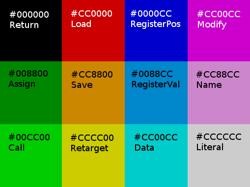

A color is a standard 3-byte RGB color, ranging from #000000 (pure black) to #FFFFFF (pure white).
A color cube is a 16x16x16 grid of colors. Entries from the grid are indexed by color, where red is the X axis, green is the Y axis, and blue is the Z axis. Since the cube is only 16 pixels wide, the lower 4 bits of each color are ignored for this. (In other words, any color between #303030 and #3F3F3F would address the same pixel - the one 3 across, 3 down, and 3 in. By convention we would say this is pixel #333333.)
On disk, we store color cubes in the GIF file format: 16x16 pixel images, with the Z axis being represented by 16 frames.
Aside from the program itself, the interpreter maintains two important pieces of state -
Current Color: this is initially #000000 (black), but instructions can change it. Most instructions use the current color in some way.
Registers: In GifScript you have access to 16x16x16 registers, identified (you guessed it) by color. Each register points to a specific pixel within a specific color cube. Initially, each one points to position #000000 of its own unique pure black color cube, but you can load new cubes for them to point to, or make them point to each other's cubes.
One thing worth noting - at any given moment, one of the registers is the "running" register, and it points to the pixel that the interpreter will read next. By default, that's register #FFFFFF. In other words, when GifScript starts, register #FFFFFF points to the program cube, and setting its position changes what instruction is be executed next. ("Goto", in other words.)
Each register also has a filename (string) associated with it. By default this is just its color name (for example "ff0000.gif"). This is the filename used when loading and saving that register.
GifScript has the following 12 special instruction colors:
current-color.pixel = right-hand-side
Set the contents of the selected pixel to the result of evaluating the right-hand side. (If that pixel is not assignable, return instead).
right-hand-side.register.call(current-color)
Evaluate the right-hand side, and call the register it selects as a function.
current-color.register.load(current-color.register.filename)
Load a gif into the selected register.
current-color.register.save(current-color.register.filename)
Save the selected register as a gif.
current-color.register.cube = right-hand-side.register.cube
Point the selected register to the result of evaluating the right hand side.
current-color = current-color.register.positionGet the position of the selected register. (Assigning to this value will move the register.)
current color = current-color.register.pixelGet the color pointed to by the selected register. (Assigning to this value will modify the register's color cube.)
current-color = running-register.cube[current-color]Get the selected pixel from the running program. (Assigning to this value will modify the program.)
current-color = modify(current-color)
Deduce a pattern from the next 3 pixels, and apply that pattern to current-color. (See Modifiers.) If the pattern can't be deduced or the result overflows, return instead. Resume execution after those pixels. (The resultant value is not assignable.)
current-color.register.filename = filename
Read the next pixels as a filename. (Interpreting each byte as an ASCII character, and stopping at the first 0 byte). Resume execution after the string.
current-color = next-pixel.
Store the next pixel as the current color. Resume execution after that pixel. (Assigning to this value will modify the program.)
current-color = this-pixel
If the interpreter reads any color other than these 12, it's simply stored as the current color. (Assigning to this value will modify the program.)